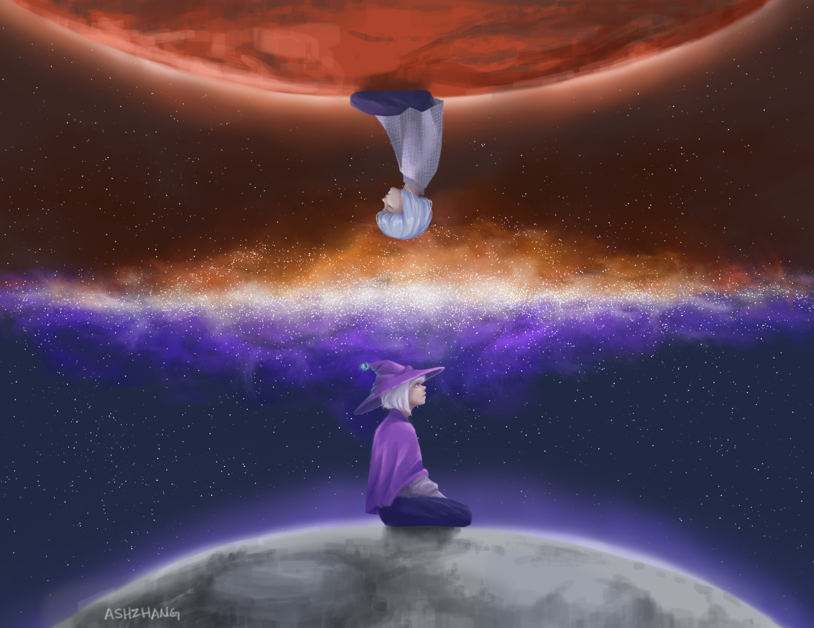

Story
Just for fun. No project-relevant content on this page.
Chapter 2: CodaBot
[continued from Project 1]

Your satellite hacking adventures have convinced you that the Jupiter Orbiter project must be stopped…but how? Luckily for you, EvanBot has called on an expert for advice: CodaBot, an old friend of EvanBot and a CSA architect who previously worked on the Venus impactor.
According to CodaBot, it should be possible to intercept the craft as it travels near Mars for a gravitational slingshot. CodaBot’s intricate plan requires perfect coordination with your friends on Mars.
Unfortunately, there is only one communication channel between here on Earth and Mars, and it passes right through the watchful gaze of Caltopia.
REGULUS is a one-of-a-kind cloud data storage service that uses CSA infrastructure. Because its datacenters are located on the lunar surface, REGULUS can be accessed by both Earthlings and Martians. In fact, due to atmospheric interference, the only way to send messages to Mars is by first storing them on REGULUS.
But be warned: there is nothing stopping Caltopia from reading data stored in REGULUS. The privacy policy certainly seems a little suspicious to you. EvanBot points out that CSA may not take too kindly to reading about your plans to thwart their warship.
With no other way to talk with your Martian allies, you have no choice but to fly right under Caltopia’s radar. You’ll have to hide all your communication in plain sight, protecting your secret plans from any attempts to read or tamper with them. Every precaution should be taken to make sure the communication is safe from Caltopian signals intelligence. Only after you make sure Caltopia won’t intercept the plans will CodaBot agree to send the details to Mars.
EvanBot and CodaBot are already in a concealed position deep within the Arctic Circle, ready to establish connection with REGULUS and Mars at your signal. The plans must be sent securely by Earth date July 28, when the Jupiter orbiter slingshots around Mars. The future of interplanetary peace depends on you.
Welcome to REGULUS - [REGU]lated [LU]nar [S]torage

REGULUS is the world’s first beyond-cloud storage service provided by Caltopia Cloud Services (CCS). By literally moving your data out of the earth, REGULUS meets a high bar of performance required by the most demanding workloads. Read our SLA and privacy policy below for more details:
REGULUS Service Level Agreement
Availability

REGULUS guarantees availability when line of sight can be established between you and the moon. Requests to REGULUS may be processed when line of sight is unavailable depending on the availability of uplink proxies around the globe and conditions of the ionosphere. We guarantee 0-60% uptime depending on the time of month, cloud cover and occurance of solar flares.
Durability

We guarantee 100% data durability. REGULUS is able to retain your data even in natural and artificial disasters up to and including global thermonuclear war. However, data durability may be compromised in event of a second space race.
Latency

Due to speed of light constraints, REGULUS has minimum network RTT of 2,600ms. (speed of light = 300,000,000m/s. distance to moon = 385,000,000m.) Imagine living on the moon, playing any sort of online game must be a pain.
Data Airgap + Firewall

Data stored in REGULUS is well airgapped with 385,000 km of vaccum. As a side effect, REGULUS is extremely well guarded against fires due to lack of oxygen in its premises. Any fires that do break out will be extinguished in 12 hours when REGULUS is no longer exposed to sunlight and temperature drops to below freezing.
Closing Remarks
We hope you enjoy using our lunar data storage, and we certainly hope no one tries securely storing data on our insecure systems using their cryptography knowledge from a computer security class.
Privacy Policy

In terms of privacy, there is no privacy.
Since the moon is not part of any nation nor the globe REGULUS is exempt from any national laws or global treaties. While REGULUS is still subject to some data sovereignty laws we have decided to ignore them, since what are they going to do anyway, subpoena the moon?
Data Protection
To acheive maximum performance, we’ve decided not to isolate key spaces between users. This means all users share the same key space. Other users may be able to see the data you stored either by dumb luck or by somehow figuring out the storage keys.
Data Analysis and Enhancement
To continuously improve the service, we perform routine analysis of data stored in the storage. This analysis may involve moderate-heavy compute which will be billed to your account. As part of this analysis your data will be made available to REGULUS support team. In addition, we may enhance your data as part of data analysis. When REGULUS decides your data could be improved upon, we will go ahead and modify it for you on your behalf. You can opt-out of the data enhancement program if you can figure out how to do so.
Network Analysis and Enhancement
To continuously improve the service, we perform routine analysis of network traffic between users and REGULUS. This analysis may involve moderate-heavy compute which will be billed to your account. As part of this analysis your data will be made available to REGULUS support team. In addition, we may enhance your in-flight network data as part of data analysis. When REGULUS decides your data could be improved upon, we will go ahead and modify it for you on your behalf. You can opt-out of the data enhancement program if you can figure out how to do so.
Closing Remarks
If you’ve read this far, you know better than to use REGULUS. But who reads SLAs and privacy policies in detail anyway? Trust us, nothing here matters anyways. We’ll still get happy customers using our service.